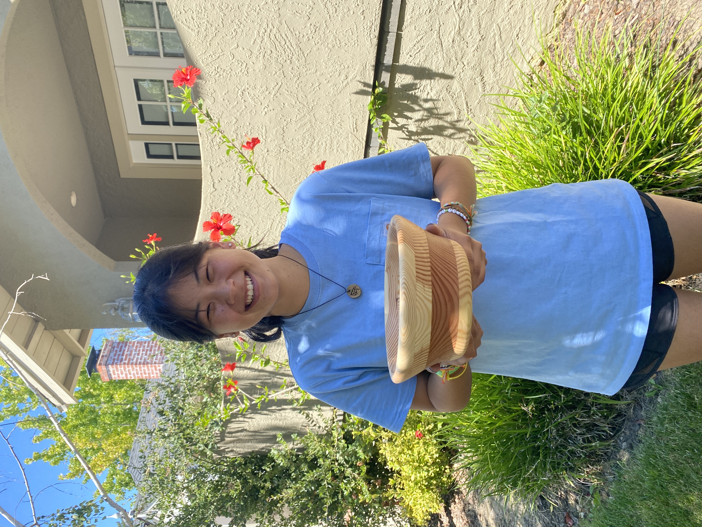
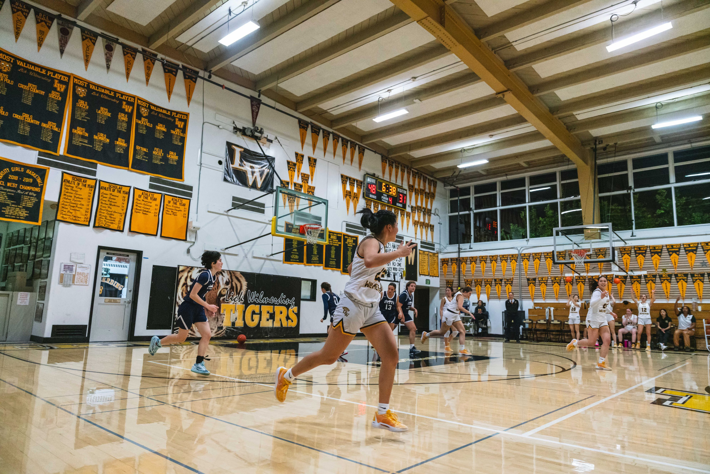
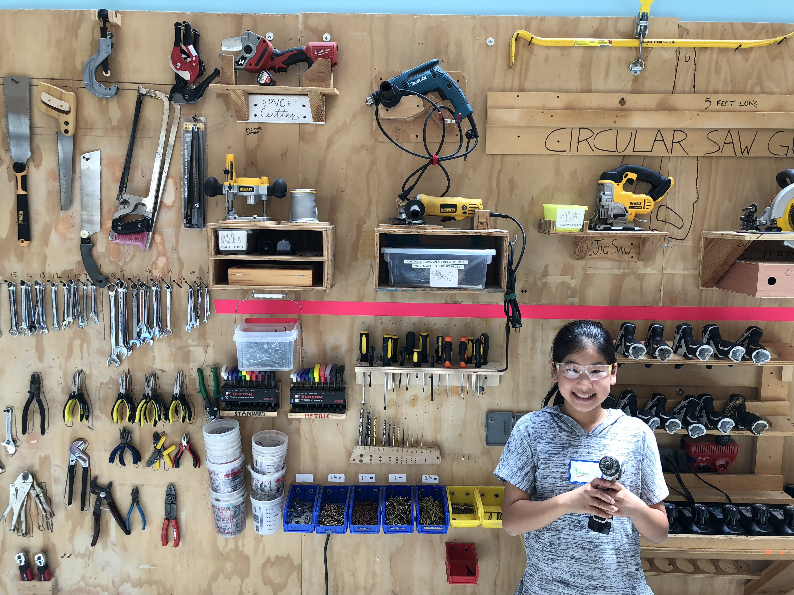

about me
I'm a Bioengineering student at UC Berkeley interested in medical devices, product development, and hands-on engineering. I enjoy working at the intersection of design, prototyping, manufacturing, and science, especially when I can take an idea from CAD to a physical solution that solves a real problem.
Most recently, I worked as an Engineering Intern at Ladera Medical, where I designed and implemented manufacturing fixtures, supported process validation and root-cause investigations, prototyped packaging improvements, and gained experience working across manufacturing, R&D, quality, and regulatory functions. I also conduct neuroscience research in the Sohal Lab at UCSF, where I've contributed to projects studying neural circuits, behavior, and cognitive flexibility.
My interest in making started long before college. Growing up around woodworking and building, I developed a love for tinkering and spent several years studying woodworking and metal fabrication in high school shop classes. I still enjoy making things whenever I can, whether that means designing a fixture in SolidWorks, working in a woodshop, or fixing something around the house.
Outside of engineering, you'll usually find me playing softball, basketball, or tennis, cooking something new, or working on another project. I created this portfolio to share the things I've designed, built, researched, and learned along the way.
Please visit my LinkedIn page, found below, to access my resume and other work experience.